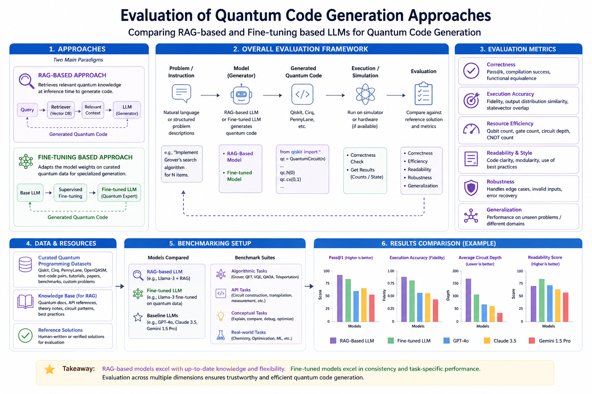
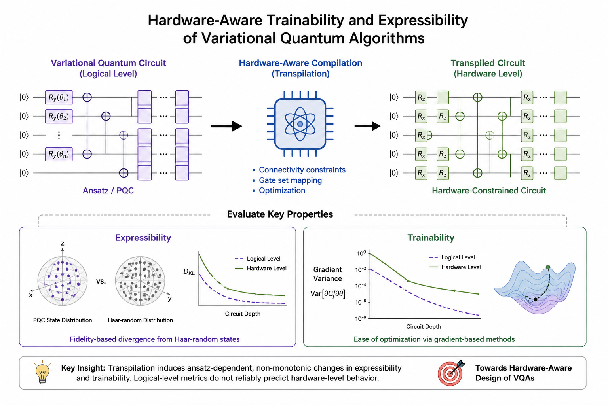

Shaf Khalid
Topics: Quantum Neural Architecture Search; QML for Fraud Detection
Research Team Lead, eBRAIN Lab · Postdoctoral Research Associate, CQTS, New York University (NYU) Abu Dhabi
Researching trainable and hardware-aware quantum machine learning systems for near-term quantum computing, with interests in hybrid quantum-classical learning, trainability and expressibility of quantum neural networks, quantum architecture search, quantum resource estimation, and GenAI frameworks, domain-specific LLMs, fine-tuning, and RAG-based benchmarking for efficient quantum code generation. My work also explores the practical potential of QML across diverse real-world applications including healthcare, weather forecasting, optimization, finance, navigation, and intelligent decision-making systems.
Trainability and expressibility of quantum neural networks, barren plateau mitigation, noise-resilient QNN design, and hybrid quantum-classical learning systems.
Hardware-aware quantum/QML algorithms, quantum architecture search, GenAI for quantum, quantum resource modeling, and QML applications in healthcare, classification, finance, robot navigation, and path planning.
Selected research directions and project areas connecting quantum machine learning, hybrid quantum-classical architectures, AI-driven quantum software, and practical near-term quantum algorithms.
Exploring how quantum layers interact with classical pre-processing and post-processing modules in hybrid learning systems. Research investigates when quantum layers provide practical benefits in representation learning, optimization, robustness, and generalization under near-term hardware constraints.
This includes hybrid quantum neural networks, hardware-aware architectures, noise-resilient QML, and resource-aware quantum neural architecture search methods.

Investigating how trainability and expressibility interact in parameterized quantum circuits and hybrid quantum neural networks. This includes studying barren plateaus, gradient propagation, circuit depth/width trade-offs, and how hybrid architectures reshape optimization landscapes beyond standard PQC assumptions.
Current work focuses on understanding whether the commonly assumed expressibility–trainability trade-off still holds in hybrid quantum-classical models and how this impacts neural architecture search for QML systems.

Developing domain-specific datasets and evaluation pipelines for large language models focused on quantum code generation. This work studies whether curated quantum programming data can improve reliability, framework awareness, and hardware-aware code generation.
Current efforts include benchmarking domain-adapted models against state-of-the-art LLMs for PennyLane-centered and broader quantum software generation tasks.

Designing quantum learning models and training strategies that remain robust under realistic noise and imperfect quantum operations. This includes studying whether noise can sometimes aid optimization, improve generalization, or mitigate barren plateau effects in near-term quantum systems.
Current work explores noise-aware training, hardware-aware QML, quantum error mitigation, and robust hybrid architectures for deployment on NISQ-era processors.

Exploring quantum machine learning and quantum optimization for real-world application domains including finance, healthcare, transportation, classification, and decision-making systems.
Research investigates how variational quantum algorithms and hybrid optimization workflows can provide scalable solutions under realistic computational and hardware constraints.

Building unified classical–quantum cost representations for benchmarking hybrid quantum systems under realistic deployment conditions. This includes FLOPs-aware HQNN analysis, analytical runtime estimation, and hardware-calibrated evaluation pipelines for comparing quantum and classical resource trade-offs.
The goal is to establish realistic benchmarking methodologies that move beyond idealized quantum evaluations and enable practical comparison between classical and hybrid systems.

Designing multi-objective neural architecture search frameworks for hybrid quantum neural networks, jointly optimizing accuracy, trainability, parameter efficiency, and hardware cost.
This work explores cross-domain co-adaptation between classical and quantum components while incorporating realistic resource constraints such as FLOPs, qubit overhead, routing complexity, and execution latency.

This project investigates how hardware-aware compilation (transpilation) impacts the expressibility and trainability of variational quantum circuits. By benchmarking multiple ansatz families before and after transpilation. Preliminary analysis show that hardware constraints can significantly and non-monotonically alter these properties and that logical-level metrics are not reliable predictors of hardware-level behavior, emphasizing the need for hardware-aware design of quantum algorithms.

Developing hybrid quantum-classical workflows for portfolio optimization, option pricing, risk analysis, and finance-oriented decision-making problems.
Current interests include quantum optimization algorithms, variational quantum circuits for financial modeling, and resource-aware quantum pipelines for practical financial applications.

Highlighted papers related to quantum machine learning, hybrid quantum neural networks, trainability, and quantum algorithms.
Selected publications will appear after ORCID publications are loaded.
Student supervision, research mentoring, thesis co-supervision, and hackathon mentorship in quantum machine learning, quantum algorithms, and AI-driven quantum software.
Topics: Quantum Neural Architecture Search; QML for Fraud Detection
Topic: Domain-Specific LLMs for Quantum Code Generation in PennyLane
Topic: Quantum Spiking Neural Networks for Weather Forecasting
Topic: Quantum Spiking Network Reinforcement Learning for Adaptive Robot Navigation
Topic: Hardware-Aware Hybrid Quantum Neural Architecture Search
Topic: Application-Specific Design Space Exploration of Quantum Neural Networks
Topic: Data Synthesis for Automated Quantum Code Generation
M.Sc. Thesis Co-Supervision · Université Libre de Bruxelles · 2024–2025
B.Sc. Thesis Co-Supervision · New York University Abu Dhabi · 2023–2024
Mentor · 2026 · Team Achievement: 2nd Runner-Up
Topic: Quantum vs Classical Benchmarking for Financial Prediciton
Topic:Quantum-Compatible Residual Learning for Graph Recurrent Neural Networks
Topic: Quantum Algorithms for Option Pricing
Topic: Quantum Algorithms for Portfolio Optimization
Topic: Barren Plateaus and Parameter Initialization in Variational Quantum Algorithms
Topic: Quantum Reinforcement Learning for Fraud Detection
Topic: Photonic Quantum Neural Networks
Topic: Quantum Error Correction
Topic: Quantum Circuit Cutting
Topic: Quantum Circuit Cutting
Topic: Quantum vs Classical Benchmarking for Financial Prediciton
Selected conference presentations and research talks.
Paper presentation on computational advantage in hybrid quantum neural networks.


Multiple paper presentation research on quantum algorithms and quantum machine learning.
Paper presentation on dilemma of barren plateaus and random parameter initialization in quantum neural networks.
Open to research collaborations, invited talks, mentoring, and discussions around quantum machine learning, quantum algorithms, and GenAI for quantum software.